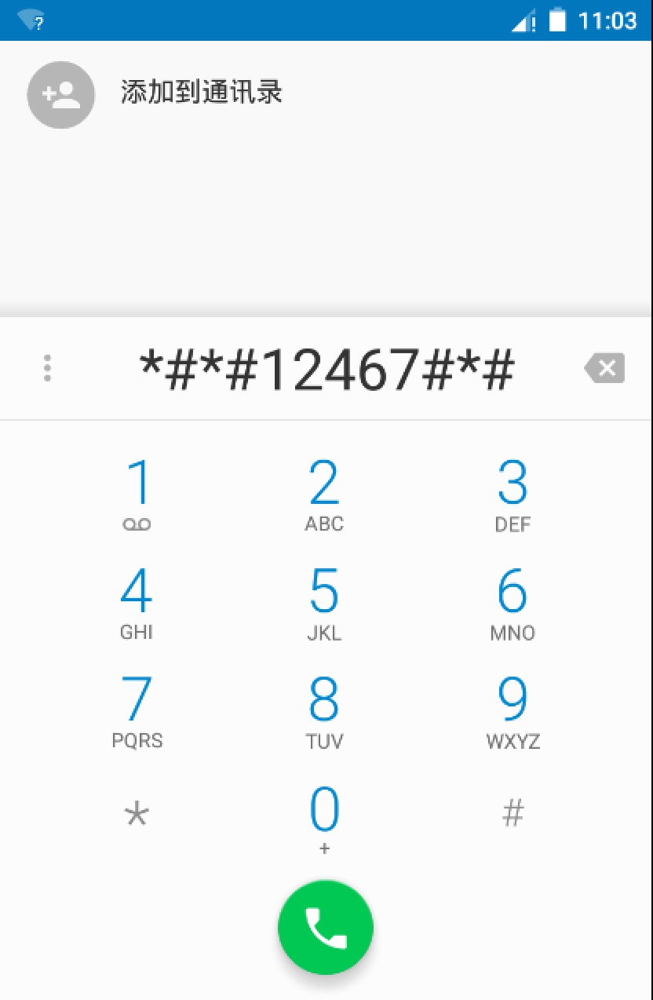

请问要来点魔法么？
但凡大型应用开发完成之后大多都会留一些用于调试的建议接口，就像微信之前的通过输入呼出的隐藏按钮，系统上的隐藏功能也不例外，从纯粹的java机时代就有各家厂商留下来的隐藏呼出代码，一般用于查看内存啊，强制重启啊，查看电量消耗什么的，多数用组合键或者是号码簿呼出的。Android平台之前也流传过很多假的SecretCode，但是其实SecretCode是真实存在于Android平台上的，并且我们也有机会实现自己的SecretCode。
SecretCode在Android上大多数是由拨号盘输入特定序列触发的，其实质上也不过是一个特殊的全局广播的收发，我们之前应该学过广播接收器，那理解起来就很容易，所谓的SecretCode也就只是个很有趣的小功能了。
首先定义一个广播接收器
package com.lfk.myapplication;
import android.content.BroadcastReceiver;
import android.content.Context;
import android.content.Intent;
public class SecretReceiver extends BroadcastReceiver {
public SecretReceiver() {
}
@Override
public void onReceive(Context context, Intent intent) {
SpUtils.put(context, "key", 1);
}
}
这里面没做什么复杂的操作，只是把SharePerference的一个key值变成1。
同时在AndroidManifest文件中：
<receiver
android:name=".SecretReceiver"
android:enabled="true"
android:exported="true">
<intent-filter>
<action android:name="android.provider.Telephony.SECRET_CODE" />
<data
android:host="12467"
android:scheme="android_secret_code" />
</intent-filter>
</receiver>
添加对应的静态注册的广播接收器的过滤器，选择SECRET_CODE选项并且加入host和scheme值。
host代表了匹配什么符号进行触发，虽然写的时候是12467但是输入的时候要输入*#*#12467#*#* 才能正确的响应：

添加处理逻辑
package com.lfk.myapplication;
import android.os.Bundle;
import android.support.v7.app.AppCompatActivity;
import android.widget.TextView;
public class MainActivity extends AppCompatActivity {
private TextView textView;
@Override
protected void onCreate(Bundle savedInstanceState) {
super.onCreate(savedInstanceState);
setContentView(R.layout.activity_main);
SpUtils.put(this, "key", 0);
textView = (TextView) findViewById(R.id.text_view);
}
@Override
protected void onResume() {
super.onResume();
if ((int) SpUtils.get(this, "key", 0) != 0) {
textView.setText("HAHAHA");
}
}
}
这里只定义了简单的一个显示逻辑，当检测到key值变化的时候修改文字的显示，但实际上SecretCode可以作为一个你应用里的一个彩蛋或是隐藏开关(你可以借由这个功能完成你奇怪内容的隐藏）。
显示效果
PS：常用的SecretCode ：If you are an Android User, Than you Should try these 32 Secret Codes!